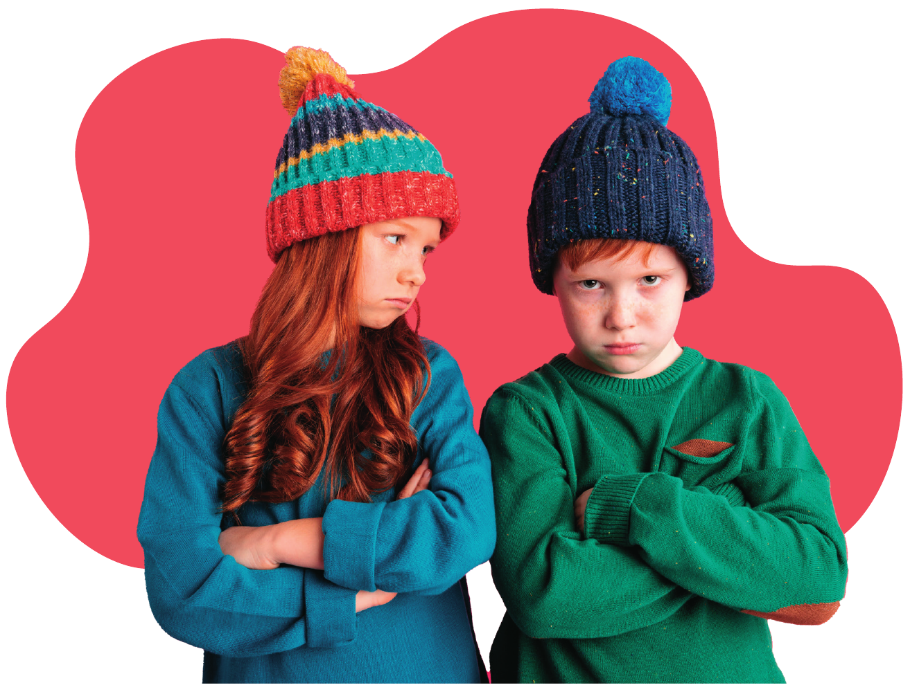

Situatë: Pas pushimit të gjatë, nxënësit shkuan me ngut në klasë. Gjatë këtij momenti, Dona ia kishte thyer lapsin Diellit. Ai u acarua me këtë veprim të sajin. Joni ndërhyri dhe i pyeti: “A mund të dalim jashtë për të biseduar?” Të dy u pajtuan. Joni filloi t’i pyeste rreth konfliktit. Dielli dhe Dona dhanë versione të ngjashme të ndodhisë. Më pas, Joni pyeti Diellin: “A ke ndonjë laps tjetër?” Dielli tregoi që lapsi, përveçqë i ndihmonte për bukurshkrim, ishte dhuratë nga gjyshi, të cilin e donte shumë. Kështu, pastaj vazhdoi ta pyeste Donën: “A po e kupton rëndësinë e lapsit të Diellit?” Dona shprehu keqardhje, duke thënë se nuk e kishte bërë me qëllim. Shoku i klasës e përmblodhi situatën. Dona ishte e gatshme t’ia jepte një laps të vetin. Dielli u pajtua që gjetën një zgjidhje. Ata ia zgjatën dorën njëri-tjetrit dhe u pajtuan që ta vazhdonin shoqërinë e tyre. Dielli e pranoi lapsin e ngjashëm.
